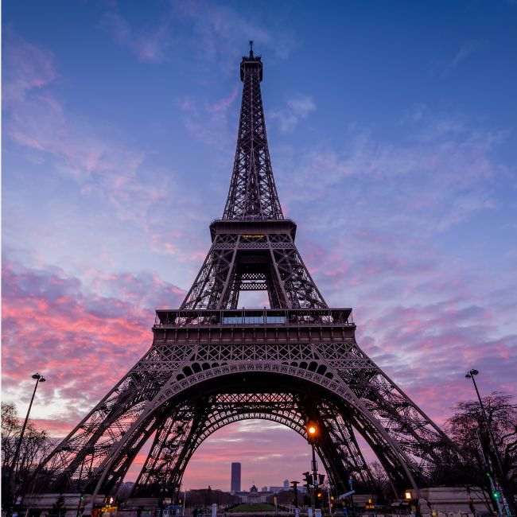
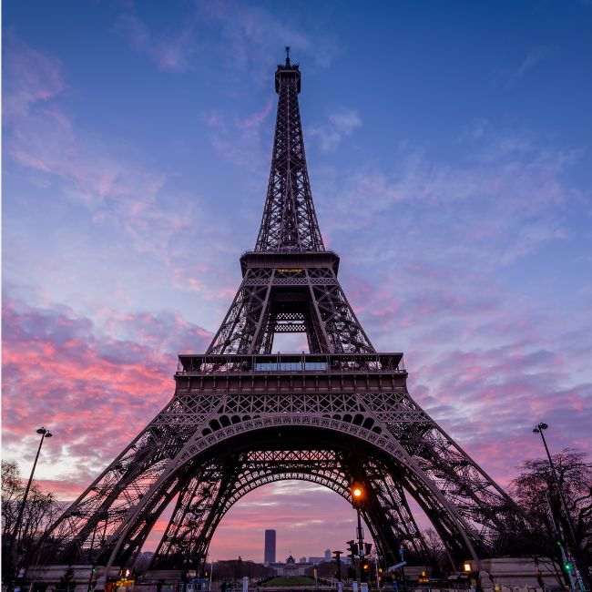

Paris, France
Paris, France's capital, is a major European city and a global center for art, fashion, gastronomy, and culture. Its 19th-century cityscape is crisscrossed by wide boulevards and the River Seine. Beyond such landmarks as the Eiffel Tower.
Visit Paris
Kyoto, Japan
Kyoto, once the capital of Japan, is famous for its numerous classical Buddhist temples, as well as gardens, imperial palaces, Shinto shrines, and traditional wooden houses. It’s also known for formal traditions such as kaiseki dining and geisha.
Visit Kyoto
New York, USA
New York City comprises 5 boroughs sitting where the Hudson River meets the Atlantic Ocean. At its core is Manhattan, a densely populated borough that’s among the world’s major commercial, financial, and cultural centers.
Visit New York
 
